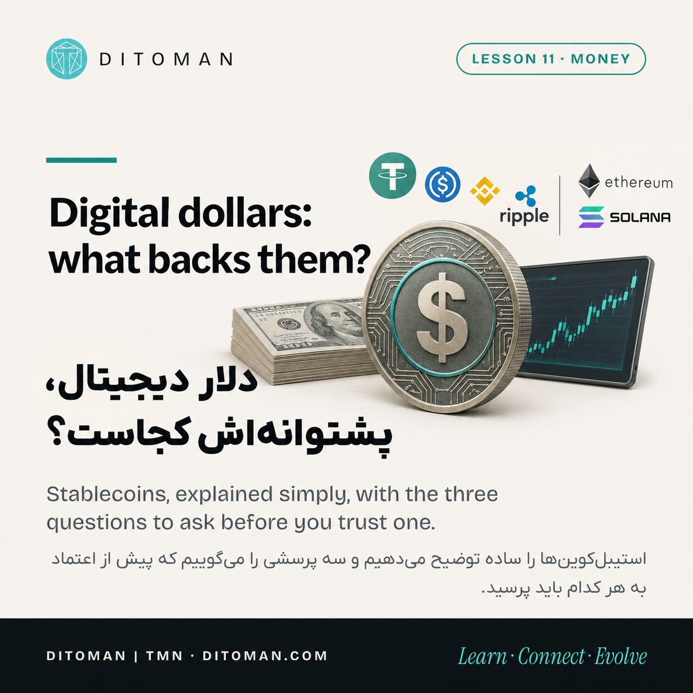
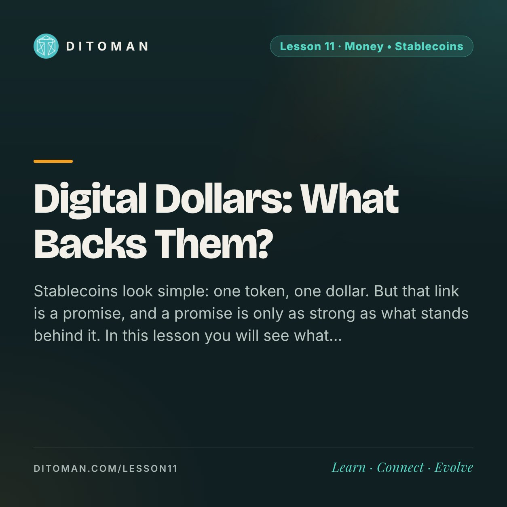
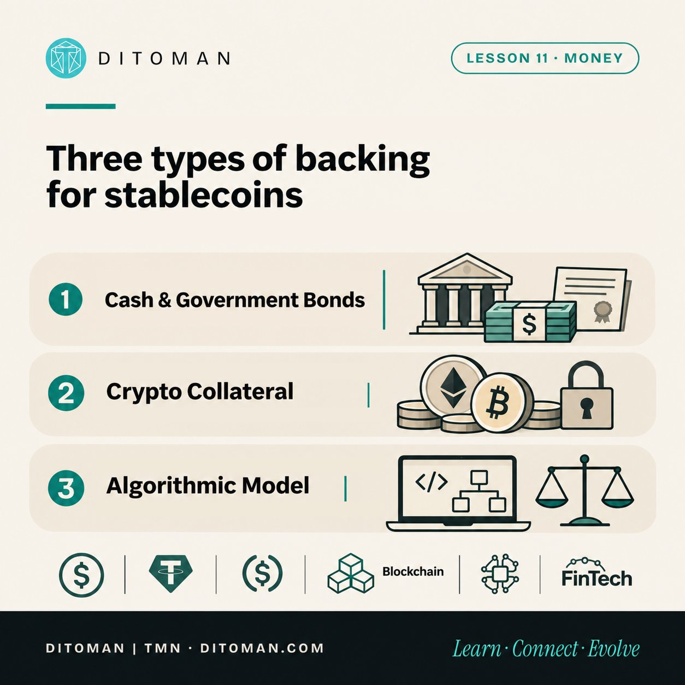
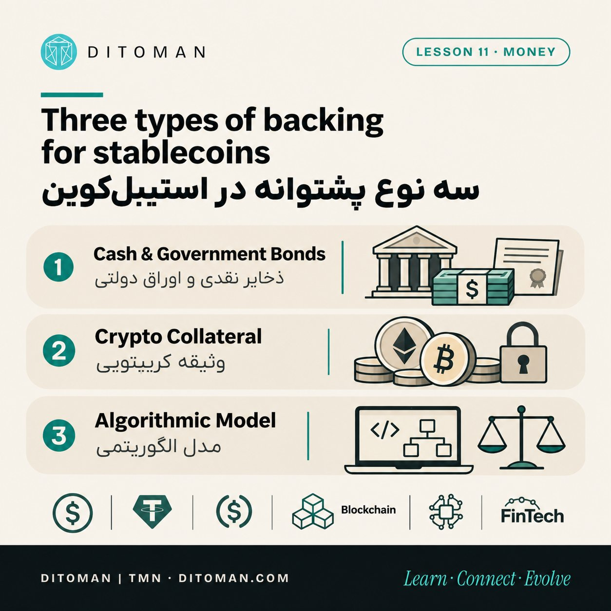

Digital Dollars: What Backs Them?
دلار دیجیتال، پشتوانهاش کجاست؟
Stablecoins look simple: one token, one dollar. But that link is a promise, and a promise is only as strong as what stands behind it. In this lesson you will see what stands behind stablecoins, how one famous stablecoin collapsed in May 2022, and the one test that matters most before you trust any token.
استیبلکوینها ساده به نظر میرسند: یک توکن، یک دلار. ولی این ارتباط یک قول است و قول فقط به اندازهی چیزی که پشتش است محکم است. در این درس میبینید پشت استیبلکوینها چه چیزی هست، چطور یکی از مشهورترین استیبلکوینها در مه ۲۰۲۲ فروپاشید، و کدام آزمون پیش از اعتماد به هر توکن از همه مهمتر است.
Lesson Content
محتوای درس
Read the lesson in English or Persian.
درس را به فارسی یا انگلیسی بخوانید.
You have probably seen USDT, USDC and other tokens quoted at almost exactly one dollar, day after day, while bitcoin jumps around by thousands. Why does that happen? Because someone has promised to keep the token there. Whether you should believe that promise depends on three things: who makes it, what stands behind it, and whether you can turn the token back into dollars.
Think of this lesson as a short detective story. Every stablecoin has a suspect (the issuer), a stash (the backing), and a way out (redemption). Your job is to check all three.
01. What a stablecoin is
A stablecoin is a digital token designed to keep its value close to one US dollar. That attachment to the dollar is called the peg. Think of a gift card that is always meant to be worth one dollar: the card itself is just a piece of plastic, and its worth comes entirely from the promise behind it.
This is different from the money in your bank account. A bank deposit is a claim on a bank. A stablecoin is a claim on whoever issues it, and the terms of that claim are written in the issuer's documents, not in a bank's branch. Read those terms before you rely on them.
02. Three ways to back a token
Most stablecoins rely on one of three kinds of backing. The picture below shows them side by side.
Cash and government bonds: the issuer holds cash or short-term government bonds for the tokens it issues. This is the most common model among the large stablecoins. The question is always how safe those reserves really are, and how easily they can be sold.
Crypto collateral: the token is backed by other crypto assets locked as collateral, usually worth more than the tokens issued. If those assets fall sharply, the system is stress-tested and needs a safety margin to stay intact.
Algorithmic model: there is no real reserve. The system tries to hold the price using supply rules and a second token. This model is the one that failed in May 2022, which is the case study below.

03. A reserve report is not an audit
When an issuer says a token is fully backed, the claim may come from a report called an attestation. An attestation is usually a snapshot of one moment, prepared for a specific date. A full audit goes deeper and covers a longer period. They are different tools, and a headline rarely tells you which one you are reading.
US law now sets firmer rules. Under the GENIUS Act, stablecoins must be backed by liquid assets such as US dollars and short-term Treasury bills, and issuers must publicly disclose the composition of their reserves every month. Issuers above $50 billion in size must also get annual audits. Those are good questions to ask of any issuer, anywhere in the world.
Ask four questions about any reserve report: what is held? How much of it is cash? Who checks it? How often is it published?
04. Redemption: the test that matters most
A stablecoin is worth one dollar only if you can, in practice, turn it into dollars. Usually the issuer redeems tokens only for approved customers, under set terms and minimum amounts. Most people can only sell on the market, to another buyer, at whatever price the market offers.
If holders doubt the backing, or the market is thin, the price can drop below one dollar. Those who need cash first often get the worst deal, because they sell into the panic. So the real question is not only what the token claims to be worth, but who can cash it in, and at what price.
05. Case study: how UST lost its peg
In 2022, TerraUSD (UST) was one of the best-known stablecoins. It was an algorithmic token: it was not backed by dollars or any other asset. Instead, it kept its peg through a pair of tokens. One UST could always be minted by burning one dollar's worth of LUNA, and a UST could be redeemed for LUNA worth one dollar. That was the whole mechanism.
Demand was boosted by Anchor, a lending platform that paid around 18 to 20 percent a year on UST deposits. That yield was far above normal, and it was not generated by ordinary lending. By early May 2022, UST had dipped to about 98 cents, and some large holders began to withdraw.
Then the loop reversed. As UST sold below one dollar, arbitrage no longer worked as the design assumed. The Luna Foundation Guard tried to defend the peg by spending its reserves. By 16 May 2022 it said less than $100 million in fungible assets remained. LUNA's value collapsed toward zero, UST fell to a few cents, and the damage spread far beyond one token.
The lesson is not that algorithms are evil. It is that a promise held up only by confidence and a second token can vanish in days. Today, the question to ask is simple: if confidence broke tomorrow, what is actually left to pay holders?
06. Three myths to drop
Myth 1: a stablecoin is always safe, like cash in a bank. A stablecoin is a claim on its issuer, not a guarantee from a government. Its safety depends on the backing, the redemption rules and the issuer's conduct.
Myth 2: 'fully backed' means it cannot break. A reserve can be real and still be illiquid, or be held in a form that cannot be sold quickly. Even a well-backed token can wobble when fear spreads faster than cash can move.
Myth 3: all stablecoins work the same way. They do not. Their backing, issuer and redemption differ, and you should check each one separately.
07. Why this matters to ordinary people
Stablecoins can move money faster and more cheaply than many traditional channels, and they run around the clock. In places where people look for a steadier store of value, they offer access to dollar-based money, which is one reason they have grown so fast.
But convenience carries risk. The weaker the backing, the bigger the damage when confidence breaks. Speed works in both directions: it helps you enter quickly, and it helps everyone leave quickly too.
08. The rules are being written
In the United States, the GENIUS Act was signed into law on 18 July 2025. It created the first federal regulatory framework for stablecoins. The law takes effect on the earlier of two dates: 18 months after enactment, or 120 days after the main regulators issue their final rules.
So the detailed rules are still being written, and they are not the same everywhere. The European Union, Hong Kong and others have their own frameworks. Read every new rule with the three questions in mind: who issues it, what backs it and whether redemption is real.
09. Try it yourself: read a reserve report
Pick any stablecoin you know and follow these six steps. It takes about ten minutes.
1. Find the official page. Use the issuer's own transparency or reserve page, not a summary site.
2. Check the date. An old report tells you about the past only.
3. List the reserves. Cash, short-term government bonds, other assets. What share is cash-like?
4. Identify the report type. Is it an attestation or an audit? Who wrote it?
5. Find the redemption terms. Who can redeem, what is the minimum amount, what fees apply, and how long does it take?
6. Write one sentence. 'I would trust this token because…' or 'I would not trust it because…'. Your reason is the real lesson.
10. Where TMN fits
TMN is not a stablecoin. It has no dollar peg and no issuer promising to redeem it, so its price is set by the market. That is why the checks in Lesson 05 and the liquidity ideas in Lesson 09 are the right tools for TMN, and the redemption test does not apply to it.
This lesson does not judge any project. It only explains a category of token, so you can recognise the category when you meet it.
What to take from this
A stablecoin is a promise. Its value depends on what backs it and whether you can actually redeem it.
Before you trust one, ask three things: who issues it? What backs it, and is it published? Can you redeem it for dollars?
A reserve report and a full audit are different tools. Read the difference before you read the headline.
History matters: a promise held up only by confidence can vanish in days, as UST showed in 2022.
Use the Lesson 05 checklist on any token, stablecoin or not.
شاید توکنهایی مثل USDT و USDC را دیده باشید که روز به روز تقریباً دقیقاً روی یک دلار ثبت میشوند، در حالی که بیتکوین هزاران دلار بالا و پایین میرود. چرا؟ چون کسی قول داده توکن را همانجا نگه دارد. باور کردن این قول به سه چیز بستگی دارد: چه کسی آن را میدهد، پشتش چیست، و آیا میشود توکن را دوباره به دلار تبدیل کرد؟
این درس را مثل یک پروندهی کوچک ببینید. هر استیبلکوین سه بخش دارد: یک ناشر (کسی که قول میدهد)، یک پشتوانه (چیزی که پشت قول است)، و یک راه خروج (بازخرید). کار شما بررسی هر سه است.
۰۱. استیبلکوین چیست
استیبلکوین توکنی دیجیتال است که هدفش نگه داشتن ارزش آن نزدیک به یک دلار آمریکاست. این چسبیدن به دلار را «پگ» (peg) مینامند. مثل کارت هدیهای که قرار است همیشه یک دلار ارزش داشته باشد: خود کارت فقط یک تکه پلاستیک است و ارزشش کاملاً از قولی میآید که پشتش است.
این با پول حساب بانکی فرق دارد. سپردهی بانکی طلب شما از یک بانک است. استیبلکوین طلب شما از ناشر آن است، و شرایط این طلب در اسناد ناشر نوشته شده، نه در شعبهی یک بانک. پیش از اتکا به آن، همین شرایط را بخوانید.
۰۲. سه راه پشتیبانی یک توکن
بیشتر استیبلکوینها به یکی از سه نوع پشتوانه تکیه میکنند. تصویر زیر هر سه را کنار هم نشان میدهد.
پول نقد و اوراق دولتی: ناشر برای هر توکنی که منتشر میکند، پول نقد یا اوراق کوتاهمدت دولتی نگه میدارد. این رایجترین مدل در استیبلکوینهای بزرگ است. پرسش همیشگی این است که این ذخایر واقعاً چقدر امناند و چقدر سریع میشود آنها را فروخت.
وثیقهی کریپتویی: توکن با داراییهای دیجیتال دیگری پشتیبانی میشود که بهعنوان وثیقه قفل شدهاند، معمولاً با ارزشی بیشتر از توکنهای منتشرشده. اگر آن داراییها شدید سقوط کنند، سیستم تحت آزمون قرار میگیرد و برای سالم ماندن به حاشیهی اطمینان نیاز دارد.
مدل الگوریتمی: پشتوانهی واقعی وجود ندارد. سیستم سعی میکند قیمت را با قواعد عرضه و یک توکن دوم نگه دارد. همین مدل است که در مه ۲۰۲۲ شکست خورد، و مطالعهی موردی زیر دربارهی آن است.

۰۳. گزارش پشتوانه، حسابرسی نیست
وقتی ناشری میگوید توکنی کاملاً پشتوانه دارد، ادعا ممکن است در گزارشی به نام «تأیید پشتوانه» (attestation) آمده باشد. این گزارش معمولاً تصویری از یک لحظهی مشخص است. حسابرسی کامل عمیقتر است و دورهی طولانیتری را پوشش میدهد. این دو ابزار متفاوتاند و تیتر خبر معمولاً نمیگوید کدام را میخوانید.
قانون آمریکا حالا قواعد سختتری دارد. طبق قانون GENIUS، استیبلکوینها باید با داراییهای نقد مانند دلار و اوراق خزانهداری کوتاهمدت پشتیبانی شوند، و ناشرها باید ترکیب ذخایرشان را هر ماه بهطور عمومی منتشر کنند. ناشرهایی که اندازهشان از ۵۰ میلیارد دلار بیشتر است، باید حسابرسی سالانه هم داشته باشند. اینها پرسشهای خوبی برای هر ناشری در هر کجای دنیا هستند.
دربارهی هر گزارش پشتوانه چهار پرسش بپرسید: چه چیزی نگه داشته شده؟ چقدرش نقد است؟ چه کسی بررسی میکند؟ هر چند وقت منتشر میشود؟
۰۴. بازخرید: مهمترین آزمون
استیبلکوین فقط وقتی واقعاً یک دلار میارزد که در عمل بتوان آن را به دلار تبدیل کرد. معمولاً ناشر فقط برای مشتریان تأییدشده، با شرایط و حداقل مبلغ مشخص، توکن را به دلار برمیگرداند. بیشتر مردم فقط میتوانند در بازار و به خریدار دیگری بفروشند، با هر قیمتی که بازار بدهد.
اگر دارندگان به پشتوانه شک کنند یا بازار کمعمق باشد، قیمت میتواند زیر یک دلار برود. کسانی که زودتر به نقد نیاز دارند، اغلب بدترین معامله را میکنند، چون در وحشت میفروشند. پس پرسش واقعی فقط این نیست که توکن خودش را چقدر میداند، بلکه این است که چه کسی واقعاً میتواند آن را نقد کند و با چه قیمتی.
۰۵. مطالعهی موردی: چطور UST چسبیدن به دلار را از دست داد
در سال ۲۰۲۲، TerraUSD (UST) یکی از مشهورترین استیبلکوینها بود. این توکن الگوریتمی بود: با دلار یا هیچ دارایی دیگری پشتیبانی نمیشد. بهجای آن، با کمک یک توکن دوم، یعنی LUNA، روی یک دلار نگه داشته میشد. با سوزاندن LUNA به ارزش یک دلار میشد یک UST ساخت، و با هر UST میشد LUNA به ارزش یک دلار گرفت. کل مکانیزم همین بود.
تقاضا با Anchor، یک پلتفرم وامدهی، تقویت شد؛ این پلتفرم سالانه حدود ۱۸ تا ۲۰ درصد روی سپردههای UST پرداخت میکرد. این بازده بسیار بالاتر از حد معمول بود و از وامدهی عادی تولید نمیشد. در اوایل مه ۲۰۲۲ قیمت UST تا حدود ۹۸ سنت افت کرد و برخی دارندگان بزرگ شروع به خروج کردند.
بعد حلقه برعکس چرخید. وقتی UST زیر یک دلار فروخته شد، مکانیزم آربیتراژ دیگر آنطور که طراحی شده بود کار نمیکرد. بنیاد Luna Foundation Guard با خرج کردن ذخایرش تلاش کرد چسبیدن به دلار را حفظ کند. تا ۱۶ مه ۲۰۲۲ اعلام کرد کمتر از ۱۰۰ میلیون دلار دارایی قابلاستفاده باقی مانده است. ارزش LUNA به صفر نزدیک شد، UST تا چند سنت افت کرد و آسیب فراتر از یک توکن پخش شد.
درس این نیست که الگوریتم بد است. درس این است که قولی که فقط با اعتماد و یک توکن دوم نگه داشته شده، میتواند در چند روز ناپدید شود. پرسش سادهای که باید بپرسید این است: اگر فردا اعتماد بشکند، واقعاً چه چیزی برای پرداخت به دارندگان باقی میماند؟
۰۶. سه باور غلط را کنار بگذاریم
باور غلط ۱: استیبلکوین مثل پول نقد در بانک، همیشه امن است. استیبلکوین طلب از ناشرش است، نه تضمین یک دولت. امنیتش به پشتوانه، قواعد بازخرید و رفتار ناشر بستگی دارد.
باور غلط ۲: «کاملاً پشتوانهدار» یعنی هرگز نمیشکند. ذخیره میتواند واقعی باشد و در عین حال نقدشونده نباشد، یا به شکلی نگه داشته شود که نتوان سریع فروختش. حتی توکن خوب پشتوانهدار هم وقتی ترس سریعتر از نقد پخش شود، میلرزد.
باور غلط ۳: همهی استیبلکوینها یکجور کار میکنند. نمیکنند. پشتوانه، ناشر و بازخرید هرکدام فرق دارد، و باید هرکدام را جداگانه بررسی کرد.
۰۷. چرا این برای مردم عادی مهم است
استیبلکوینها میتوانند پول را سریعتر و ارزانتر از بسیاری از مسیرهای سنتی جابهجا کنند، و شبانهروزی کار میکنند. در جاهایی که مردم دنبال نگهداری ارزش پایدارتر هستند، دسترسی به پولی با پایهی دلار هم جذاب است؛ به همین دلیل رشد این بازار سریع بوده است.
اما راحتی هزینهای دارد. هرچه پشتوانه ضعیفتر باشد، وقتی اعتماد بشکند آسیب بزرگتر است. سرعت در هر دو جهت کار میکند: هم به شما کمک میکند سریع وارد شوید، هم به همه کمک میکند سریع خارج شوند.
۰۸. قواعد در حال نوشته شدن است
در آمریکا قانون GENIUS در ۱۸ ژوئیهی ۲۰۲۵ امضا شد و نخستین چارچوب قانونی فدرال برای استیبلکوینها را ساخت. این قانون زودتر از دو تاریخ اجرایی میشود: ۱۸ ماه پس از تصویب، یا ۱۲۰ روز پس از آنکه نهادهای اصلی ناظر قواعد نهایی را منتشر کنند.
پس قواعد جزئی هنوز در حال نوشته شدن است و در همهی کشورها یکسان نیست. اتحادیهی اروپا، هنگکنگ و دیگران چارچوبهای خودشان را دارند. هر قاعدهی تازه را با همان سه پرسش بخوانید: ناشرش کیست، پشتوانهاش چیست و بازخرید واقعی است یا نه.
۰۹. خودتان امتحان کنید: یک گزارش پشتوانه را بخوانید
یک استیبلکوینی که میشناسید انتخاب کنید و این شش گام را دنبال کنید. حدود ده دقیقه طول میکشد.
۱. صفحهی رسمی را پیدا کنید. از صفحهی شفافیت یا پشتوانهی خود ناشر استفاده کنید، نه خلاصهی یک سایت دیگر.
۲. تاریخ را بررسی کنید. گزارش قدیمی فقط دربارهی گذشته به شما میگوید.
۳. ذخایر را فهرست کنید. نقد، اوراق کوتاهمدت دولتی، داراییهای دیگر. چه سهمی شبیه پول نقد است؟
۴. نوع گزارش را تشخیص دهید. تأیید پشتوانه است یا حسابرسی؟ چه کسی آن را نوشته؟
۵. شرایط بازخرید را پیدا کنید. چه کسی میتواند بازخرید کند، حداقل مبلغ چقدر است، کارمزد چیست و چقدر زمان میبرد؟
۶. یک جمله بنویسید. «به این توکن اعتماد میکنم چون…» یا «اعتماد نمیکنم چون…». دلیل شما همان درس واقعی است.
۱۰. TMN کجای این بحث است
TMN استیبلکوین نیست. نه به دلار چسبیده و نه ناشری دارد که قول بازخرید بدهد، پس قیمتش در بازار تعیین میشود. به همین دلیل برای TMN بررسیهای درس ۰۵ و مفاهیم نقدشوندگی درس ۰۹ ابزار درستاند، و آزمون بازخرید به آن ربطی ندارد.
این درس دربارهی هیچ پروژهای قضاوت نمیکند. فقط یک دسته از توکنها را توضیح میدهد تا وقتی با آن روبهرو شدید، دستهاش را بشناسید.
چه برداشتی کنیم
استیبلکوین یک قول است. ارزشش به پشتوانهاش و به این بستگی دارد که واقعاً بشود آن را به دلار تبدیل کرد.
پیش از اعتماد به هر استیبلکوین سه چیز بپرسید: ناشرش کیست؟ پشتوانهاش چیست و آیا منتشر میشود؟ آیا میشود آن را به دلار تبدیل کرد؟
گزارش پشتوانه و حسابرسی کامل دو ابزار متفاوتاند. پیش از تیتر خبر، تفاوتشان را بخوانید.
تاریخ مهم است: قولی که فقط با اعتماد نگه داشته شده، میتواند در چند روز ناپدید شود، همانطور که UST در ۲۰۲۲ نشان داد.
چکلیست درس ۰۵ را روی هر توکنی به کار ببرید، استیبلکوین باشد یا نه.
Stablecoins and TMN are not the same thing
استیبلکوین و TMN یک چیز نیستند
TMN is not a stablecoin and has no dollar peg. Its price is set by the market, so the checks in Lesson 05 and the liquidity ideas in Lesson 09 are the right tools to read it. This lesson explains the category, not any project.
TMN استیبلکوین نیست و به دلار چسبیده نیست. قیمتش در بازار تعیین میشود، پس بررسیهای درس ۰۵ و مفاهیم نقدشوندگی درس ۰۹ ابزارهای درستی برای خواندنش هستند. این درس دستهی دارایی را توضیح میدهد، نه پروژهای را.
Key Concepts
مفاهیم کلیدی
- Stablecoin
- Peg
- Reserve backing
- Attestation versus audit
- Redemption
- Collateral
- Algorithmic model
- Depeg
- GENIUS Act
- استیبلکوین
- پگ (چسبیدن به دلار)
- پشتوانهی ذخیره
- تأیید پشتوانه در برابر حسابرسی
- بازخرید
- وثیقه
- مدل الگوریتمی
- دپگ (خروج از پگ)
- قانون GENIUS
Learning Objectives
اهداف یادگیری
- Explain what a stablecoin is and what the peg means.
- Name the three main kinds of backing and the main risk of each.
- Tell an attestation report from a full audit, and say what the GENIUS Act requires.
- Explain why redemption decides whether a peg holds, using the UST case.
- Read a reserve report step by step and write a reasoned verdict.
- Apply three questions before trusting any stablecoin.
- توضیح دهید استیبلکوین چیست و پگ یعنی چه.
- سه نوع اصلی پشتوانه و ریسک اصلی هر کدام را نام ببرید.
- گزارش تأیید پشتوانه را از حسابرسی کامل تشخیص دهید و بگویید قانون GENIUS چه چیزی لازم میداند.
- با کمک مطالعهی UST توضیح دهید چرا بازخرید تعیین میکند پگ حفظ میشود یا نه.
- یک گزارش پشتوانه را گامبهگام بخوانید و یک قضاوت مستدل بنویسید.
- پیش از اعتماد به هر استیبلکوین سه پرسش را به کار ببرید.
Future Quiz Bank
بانک پرسشهای آزمونک آینده
These questions are prepared for the future Ditoman quiz and participation system.
این پرسشها برای سامانهی آزمونک و مشارکت آیندهی دیتومان آماده شدهاند.
Question 1
پرسش ۱
What is the main goal of a stablecoin?
هدف اصلی استیبلکوین چیست؟
A. Fast price growth
الف. رشد سریع قیمت
B. Keeping its value close to one dollar
ب. ثابت نگه داشتن ارزش نزدیک به یک دلار
C. Fully replacing the central bank
ج. جایگزینی کامل بانک مرکزی
Correct answer: B
پاسخ درست: ب
Question 2
پرسش ۲
Which kind of backing did UST rely on, and failed in May 2022?
UST به کدام نوع پشتوانه تکیه داشت که در مه ۲۰۲۲ شکست خورد؟
A. Cash reserves
الف. ذخایر نقدی
B. Crypto collateral
ب. وثیقهی کریپتویی
C. Algorithmic model with a second token
ج. مدل الگوریتمی با یک توکن دوم
Correct answer: C. UST had no dollar reserve; it relied on LUNA and minting and burning.
پاسخ درست: ج. UST ذخیرهی دلاری نداشت و به LUNA و سازوکار ساخت و سوزاندن تکیه داشت.
Question 3
پرسش ۳
Compared with a full audit, what does an attestation report show?
در مقایسه با حسابرسی کامل، گزارش تأیید پشتوانه (attestation) چه چیزی را نشان میدهد؟
A. The same thing as a full audit
الف. همان حسابرسی کامل
B. A picture of one moment
ب. تصویری از یک لحظه
C. A government guarantee
ج. ضمانت دولتی
Correct answer: B
پاسخ درست: ب
Question 4
پرسش ۴
If the issuer redeems only for approved customers, what can an ordinary holder usually do?
اگر ناشر فقط برای مشتریان تأییدشده بازخرید کند، دارندهی عادی معمولاً چه کار میتواند بکند؟
A. Sell on the market, with the risk that the price falls below one dollar
الف. در بازار بفروشد، با این ریسک که قیمت زیر یک دلار برود
B. Demand a refund from the central bank
ب. از بانک مرکزی بازپرداخت بخواهد
C. Nothing; the token is worth one dollar anyway
ج. هیچ کاری؛ توکن در هر حال یک دلار میارزد
Correct answer: A
پاسخ درست: الف
Question 5
پرسش ۵
Which is the right question to ask before trusting a stablecoin?
کدام پرسش درست پیش از اعتماد به یک استیبلکوین است؟
A. Who issues it?
الف. ناشرش کیست؟
B. Will its price go up?
ب. آیا قیمتش بالا میرود؟
C. Did my friends buy it?
ج. آیا دوستانم خریدهاند؟
Correct answer: A
پاسخ درست: الف
Sources
منابع
- Mayer Brown: GENIUS Act signed into law (18 July 2025) — Signing date and the first federal framework for payment stablecoins
- Latham & Watkins: The GENIUS Act of 2025 — Effective date rule (18 months or 120 days after final regulations)
- Bloomberg via BNN: Trump signs stablecoin law — Liquid-asset backing and monthly reserve composition disclosure
- The Block: Trump signs GENIUS Act — Full dollar backing and annual audits for issuers above $50 billion
- The Block: Terra, Luna and UST, how we got here (11 May 2022) — How the UST peg worked and the first days of the collapse
- Corporate Finance Institute: What happened to Terra — Terra collapse overview and market losses
- CoolWallet: Terra autopsy — Luna Foundation Guard reserve remaining on 16 May 2022
- CVJ: TerraUSD (UST) overview — Anchor yield of 18 to 20 percent and the early 98-cent dip
Figures for the UST case come from the sources above and may be revised by later research. The three myths and the reading exercise are educational, not investment advice.
ارقام مطالعهی UST از منابع بالا آمده و ممکن است با پژوهشهای بعدی اصلاح شود. باورهای غلط و تمرین خواندن گزارش آموزشیاند و توصیهی سرمایهگذاری نیستند.
Instagram Summary
خلاصه در اینستاگرام
A short visual version of this lesson is on Instagram. This page is the full learning version.
نسخهی تصویری کوتاه این درس در اینستاگرام منتشر شده است. این صفحه نسخهی کامل آموزشی آن است.